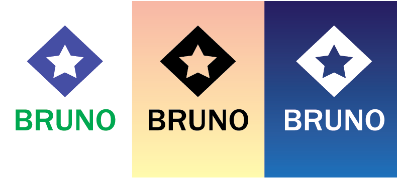

Use Adobe Illustrator to create a logo for yourself or your imaginary company.
The logo has to feature either or first or last name, or both.
It has to be a combination of type and a symbol
Type needs to be converted to curves (create outline).
Strokes need to be converted to curves (create outline).
Counter spaces need to be transparent.
Make three versions of the logo:
In colors, on a white background.
Black, on a light, gradient background.
White, on a dark, gradient background.
Here’s my very dull example.

Meet the exercise criteria: 40%
Technique and Execution: 30%
Challenge: 20%
Aesthetic: 10%